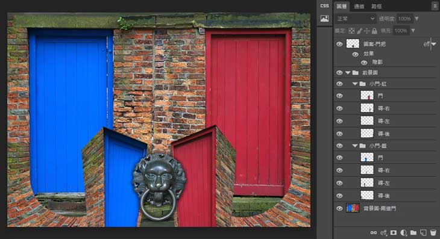

二道門 門把手．special effect

04-03 motion effect
文件尺寸:
890 x 630 px
素材來源:
(pixabay)
doors - VariousPhotography
doorknob - Momentmal
模糊特效:
動態模糊 motion blue
放射狀模糊 radial blur
筆記
1-1 電視畫面結構的基礎元素
光線
- 光線的構圖／相對強度／方向／性質。
- 光的色溫控制／強度控制／方向控制。
線條
- 線條是繪畫者對客觀事物進行抽象的產物。
- 線條是形成畫面線條透視的主要元素，確定物體的遠近空間關係。
- 線條和線條的有機結構是畫面構圖結構的重要手段。
色彩
- 色彩學認為，色彩本身並無抽象含義，但當色彩進入人類社會就產生一種約定俗成的社會寓意。
- 色彩多變性，實質上是反映色彩與自然現象、生理現象、人文現象和社會現象的複雜關係。
- 三色學說創立者認為，任何物體色彩都由一定比例的三原色彩組合成的。
- 色彩構圖的內容：色調的冷暖，色度的明暗，色彩的變化、對比、和諧、漸變以及畫面上的色塊分布等。
1-2 電視畫面結構的實體元素
畫面通常包括主體、陪體、前景、背景等內容。
主體
- 電視畫面中的主要對象(主體)，也是畫面結構的靈魂。
- 根據表達內容的需要，由電視畫面"動"的特點形成主體轉移現象。
- 突出"主體"的方法「構圖處理、光影布置、動靜對比」
陪體
- 突顯主體的綠葉。
- 均衡畫面、渲染氣氛和美化畫面的作用。
- 畫幅之外的陪體給人以聯想的注意力、運動方向都朝向畫外的某一方向，這是陪體在畫外的"間接"作用。
2-1 電視畫面的空間結構
空間的概念與特性
- 空間是(運動著的)物質存在的形式。
- 空間表現 - 為物質的伸張性和廣延性，即物質的體積、形狀、相對位置、排列順序和運動規律。
- 任何空間都是具體物質對象的空間，是與具體物質對象的運動範疇聯係在一起的。
- 空間是相對的、具體的，電視畫面實行客觀空間和主觀空間的轉換才成為可能，畫面構圖才具有意義。
電視畫面的物理空間
- 空間伸張和廣延：一滴水折射太陽的光輝(在有限的空間內展現廣闊的世界"身臨其境”)。
- 空間形態：電視畫面本質上是一種平面藝術二維空間，確能夠表現三維物像，便處於一種假三維的傳播形態。
電視畫面的心理空間
- 空間感是人的生理和心理交互作用的產物，是在生活環境和實踐活動中形成、發展起來的。
- 空間知覺是空間觀念的印象、空間想像的基礎。人的空間知覺總是具體的，有局限性的，使得反映世界時，並不需要原物照搬，就留給了電視畫面廣闊的天地。
電視畫面構圖的空間處理
- 新聞類節目：應該是紀實性的空間(空間是現實存在的，對現實空間的如實反映)，其要求摒棄"導、擺、補"的人為主觀做法，提倡"挑、等、搶”。
- 藝術類節目：剪輯在藝術類節目裡是一個再創作過程，要把握處理鏡頭組接"空間關係"的規律。
- 空間關係有：壓縮(插入鏡頭來壓縮空間距離)、跳躍(鏡頭組接或段落轉換使空間大輻度跳躍)、延伸(關鍵性段落，在鏡頭組接中有意識地擴大空間)、方向(鏡頭方向按攝影軸線規律處理，有些畫面處理在某種特殊衝擊效果需求下也可以跳軸)。
2-2 電視畫面的時間結構
時間的概念與特性
時間是運動著的物質存在的形式。有三種特徵：
(1) 相對性：時間隨著物質運動速度的變化而變化，人類對時間的感覺差別相當大。
(2) 確定性：時間在定量上對任何人都是一樣的，不能代用、不用借用，具有流逝性。
(3) 傾向性：指時間傾向未來，可根據時間做出總體構思和設計。如時間可以壓縮或延伸，加速或放慢，可以按需要維持原來的長度不變，可以向前推進或往回追溯，還可以傳達內在的時間。
電視畫面的物理時間
- 以蒙太奇手段為主要敘事觀念的電視(大眾媒介)在時間的特性上比起電影有更複雜的形態，其擁有真實直播信息的時間和時間流。
- 時間流的形態：電影時間只能是儲存的，而電視時間則可以是經驗的；電影時間只能是局部的，而電視時間可以是連續的。
3-1 黑白影調
黑白攝影可以把作品分為3類：
高調 主要包括灰色級譜的上半部分：白、極淺灰、淺灰、深淺灰和中灰。晴朗的天空，陽光燦爛，人們的心情會輕鬆愉快，這是高調作品的含義。
低調 主要包括灰色級譜的下半部分：淺暗灰、暗灰、深暗灰和黑，陰暗的天空，滿天的烏雲，或者背景一片黑暗，這種令人壓抑的氣氛都是由低調營造出的；當然有時也可以用它來表現一種幽靜的情調。
中間調是一種中性的影調，在灰色級譜上，沒有太多的白，也沒有太多的深灰和黑。中間調攝影使氣氛非常柔和。既不大悲，又不大喜，生活中本身不會有那麼多悲喜劇，在大部分的攝影應該是中間調的作品。
影調從反差角度來分為3類：
硬調 主要特點是強反差，在九級灰度中，大部分用黑或白兩種消色，中灰部分一般沒有或極少，而且常用影子，形成很暗或很亮的影調。
軟調 是相對硬調而言，作品柔和細膩，具有過渡層次豐富的特點，主要是使用軟光照明，也就是散射光照明。
中間調 黑白消色作品的中間調，從攝影角度來講，指黑白正常調(在灰色級譜中從白到黑的九級灰度都應該看得到，否則會造成影調不全)。黑白電影中，一般也採用中間調來表現。
3-2 彩色影調
彩色高調
主要表現為色彩與消色白色的混合程度，白色的成分越多，越傾向高調。
(1) 暖高調，紅、橙、黃等暖色與白色的混合，表現暖色調的種種含義
(2) 冷高調，主要以青、藍色調與白色的混合，表現各種基本冷色的含義。
彩色低調
主要表現為色彩與消色黑色的混合，黑色的成分越多，越傾向低調。
(1) 暖低調，紅、橙、黃等暖色與消色黑色的混合，表現暖色調的種種含義
(2) 冷低調，主要以青、藍色調與消色黑色的混合，表現各種基本冷色的含義，與冷高調相比，冷低調不僅使畫面偏向冷色的基本含義，有時還會增加某些宗教的神秘氣氛，有些表現冷低調的畫面讓人感的恐怖。
草稿

練習
(1) 背景圖疊上漸層色
漸層色 ( A 圖層 )
- 線性漸層 : 紫、藍、綠、橘、紅
- 對角線拖拉漸層
背景圖-兩道門 ( B 圖層 )
- 幾何形去背 : 邊緣羽化 15px，拉橢圓形超出圖片邊界，再用矩形切掉上下邊。
- 動態模糊 motion blue : 角度「0」、間距「15px」
- 放射狀模糊 radial blur : 總量「10」、方式「縮放 zoom」、品質「佳 good」、中心點「中下 ( x:50%, y:70%)」
合成 A、B 圖層
- 漸層色(A) 移動到 背景圖(B) 下方
- 背景圖(B) 圖層模式 : 亮度/明度 luminosity ( 疊入下層漸層色 )
(2) 前景圖 ( 截取部份背景圖元素做變化 )
小門-紅 ( 小門-藍 )
- 去背/變形/組合 : 截取「( 平面 ) 門」、變形成「立體 ( 透視 ) 門」、組合「紅磚牆」連貫前／後景圖
- 邊緣羽化 : 15px
- 圖層模式 : 柔光 Soft Light
- 漸層遮罩 : 曲面紅磚牆淡出
(3) 主題圖案-門把
- 去背 : 邊緣羽化 5px
- 圖層模式 : 覆蓋 Overlay
- 放射狀模糊 : 總量「2」、方式「迴轉 spin」、品質「佳 good」、中心點「中間 ( x:50%, y:50%)」
(4) 重新調整背景圖「漸層色」( A 圖層 )
影像調整 - 色相/飽和度 ( hue/saturation )
- 色相 : 移動漸層色分布，凸顯小門 ( 前景圖 )「紅／藍」顏色
- 飽和度 : 0
- 明亮 : -2 ( 微調數值，相片暗角效果 )